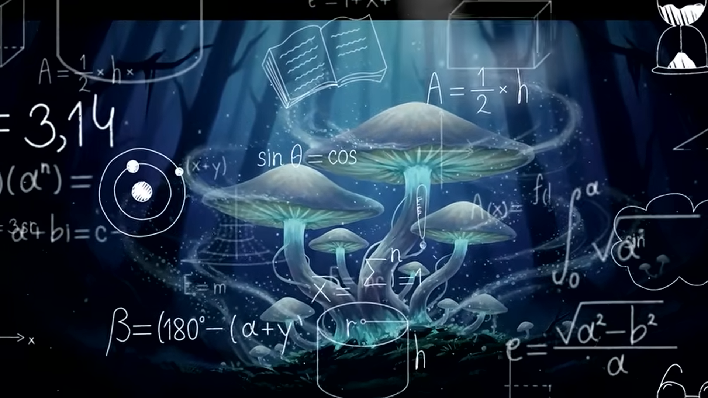

სოკოს ზეგავლენა საერთო მაშტაბით

სოკოების გლობალური როლი და მუშაობის მექანიზმი ბუნებაშისოკოები დედამიწის ეკოსისტემის მთავარი „არქიტექტორები“
არიან.
მათი გავლენა საერთო მასშტაბით რამდენიმე ძირითად მექანიზმზე დადის:
1. ნივთიერებების
გადამუშავება
(დეტრიტოფაგია)სოკოები ბუნების მთავარი მწმენდავები და გადამმუშავებლები არიან.
მათ გარეშე პლანეტა მკვდარი
მცენარეებისა და ხეების ნაგავსაყრელად იქცეოდა.მექანიზმი:
სოკოები გამოყოფენ ძლიერ ფერმენტებს თავიანთი
გარემომცველი
ქსელიდან (მიცელიუმიდან).
ეს ფერმენტები გარედანვე შლის რთულ ორგანულ ნაერთებს (მაგალითად, ცელულოზასა და
ლიგნინს,
რომლისგანაც ხის მერქანი შედგება) მარტივ ელემენტებად. ამის შემდეგ, მიცელიუმი იწოვს საჭირო ნივთიერებებს, ხოლო
დარჩენილი მინერალები ბრუნდება ნიადაგში, რაც მას ნოყიერს ხდის სხვა მცენარეებისთვის.
2. ნახშირბადის
გლობალური
რეგულირება კლიმატისთვისსოკოები პლანეტას გადახურებისგან იცავენ და კლიმატის სტაბილურობას
ინარჩუნებენ.მექანიზმი:
ისინი ატმოსფეროდან ითვისებენ და მიწისქვეშა ქსელებში ბლოკავენ (ინახავენ) წელიწადში დაახლოებით 13 მილიარდ ტონა
ნახშირორჟანგს . ეს არის კაცობრიობის მიერ ნამარხი საწვავისგან (ნავთობი, ქვანახშირი) გამოყოფილი მავნე
გამონაბოლქვის მესამედი .
3. „ტყის ინტერნეტი“ (მიკორიზული სიმბიოზი)სოკოები ბიოლოგიურ ქსელში
აერთიანებენ
მთელ მცენარეულ სამეფოს.მექანიზმი: მიცელიუმის ძაფები მჭიდროდ ეკვრის და უერთდება ხეებისა და მცენარეების ფესვებს
(ამ კავშირს მიკორიზა ეწოდება). ამ გლობალური მიწისქვეშა მილსადენით სოკოებს ხეებიდან გადააქვთ წყალი, აზოტი და
ფოსფორი იქ, სადაც მათი დეფიციტია.
გარდა ამისა, ეს ქსელი მუშაობს როგორც მონაცემთა ბაზა: მისი საშუალებით ხეები
ერთმანეთს ქიმიურ სიგნალებს უგზავნიან მავნებლების თავდასხმის შესახებ,
რათა მეზობელმა ხეებმა თავდაცვა წინასწარ
ჩართონ.4. ელემენტების წრებრუნვის უზრუნველყოფასოკოები არიან ერთადერთი რგოლი,
რომელიც კრავს ბუნებაში
სიცოცხლისა და
სიკვდილის ციკლს.მექანიზმი: მკვდარ ორგანულ მასას (დაცემულ ფოთლებს, ცხოველების ნაშთებს) ისინი გარდაქმნიან
არაორგანულ ნივთიერებებად (აზოტი, ფოსფორი, კალიუმი). ამით ისინი ნიადაგს უბრუნებენ იმ ბაზისურ ქიმიურ ელემენტებს,
რომელთა გარეშეც ახალი მცენარეები ფიზიკურად ვეღარ გაიზრდებოდნენ.